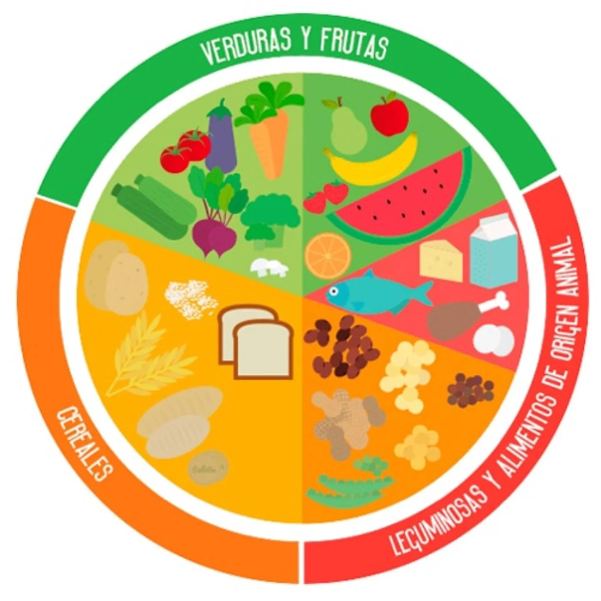
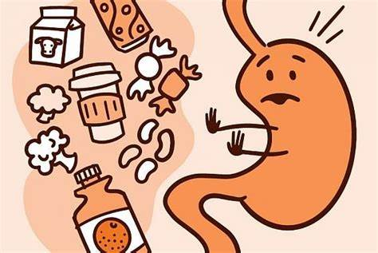

Los hábitos saludables son acciones que contribuyen a mantener una buena salud y bienestar. Estas prácticas nos permiten evitar enfermedades y mejorar la calidad de vida. Al llevar una vida activa y hacer ejercicio regularmente, fortalecemos nuestros huesos, músculos y órganos vitales como el corazón y los pulmones. Además, el ejercicio físico también nos ayuda a liberar endorfinas, las cuales nos hacen sentir felices y alivian la depresión.
Otro hábito saludable es evitar el consumo de tabaco. El tabaquismo es una de las principales causas de enfermedades pulmonares y cardíacas. Fumar cigarrillos no solo afecta a los fumadores, sino también a las personas expuestas al humo de segunda mano. Por eso, es fundamental dejar de fumar y evitar estar cerca de personas que fuman.
Los hábitos saludables desempeñan un papel fundamental en el bienestar de los mexicanos. Tener hábitos saludables tiene un impacto positivo en el estado físico, mental y social de las personas. Estos hábitos son esenciales para prevenir enfermedades degenerativas que afectan a millones de personas en México. Según datos de la Encuesta Nacional de Salud y Nutrición 2018, aproximadamente 8 millones de personas en México sufren de diabetes mellitus, siendo esta la segunda causa de muerte en el país.
Los estilos de vida saludables están relacionados con diversos aspectos, como la alimentación, el consumo de tabaco, la actividad física, el consumo de alcohol, las drogas y los riesgos ocupacionales.
La práctica regular de ejercicio físico es clave para un envejecimiento saludable y ayuda a prevenir problemas como la obesidad, la presión arterial alta, la osteoporosis y la depresión. Además, fortalece los huesos, el corazón y los pulmones, tonifica los músculos, mejora la vitalidad, alivia la depresión y facilita conciliar el sueño.
Tener hábitos saludables trae consigo una serie de beneficios que son clave para nuestra calidad de vida. Estos beneficios se reflejan en diferentes aspectos de nuestro bienestar, tanto físico como mental y social.
Estos son solo algunos de los beneficios que se obtienen al tener hábitos saludables. Como podemos ver, cuidar nuestra salud y adoptar hábitos saludables tiene un impacto positivo en múltiples aspectos de nuestra vida. Es importante recordar que pequeños cambios en nuestra rutina diaria pueden marcar una gran diferencia en nuestra calidad de vida a largo plazo.
Tener hábitos saludables es fundamental para mantener una buena calidad de vida. Lamentablemente, llevar una vida sin hábitos saludables puede acarrear graves consecuencias para nuestra salud. Estas repercusiones negativas pueden variar, pero incluyen:
La Organización Mundial de la Salud afirma que llevar un estilo de vida saludable ayuda a aumentar el bienestar físico, mental y social de las personas. Esto significa que al adoptar hábitos saludables, estamos mejorando nuestra calidad de vida en todos los aspectos. Sin embargo, cuando no priorizamos nuestra salud y no seguimos una dieta equilibrada y una rutina de ejercicio físico, estamos poniendo en riesgo nuestra salud y bienestar.
México, desafortunadamente, enfrenta una situación preocupante en cuanto a enfermedades crónicas como la diabetes. Según estimaciones de la OMS, en 2022 se estima que 14 millones de adultos de 18 años o más viven con diabetes en México, lo que representa un incremento del 10% en los últimos dos años. Esto es alarmante y refuerza la importancia de adoptar hábitos saludables para prevenir este tipo de enfermedades y trastornos.
Llevar una vida sedentaria es uno de los principales factores que contribuyen a la aparición de estas enfermedades y trastornos. El sedentarismo puede ocasionar un deterioro del cuerpo y un aumento de peso, lo que a su vez aumenta el riesgo de padecer enfermedades del corazón, presión arterial alta y diabetes.
Por otro lado, una mala alimentación también puede tener consecuencias negativas para nuestra salud. Consumir alimentos procesados, altos en grasas saturadas y azúcares puede llevar al desarrollo de la obesidad, enfermedades del corazón y diabetes.
Además, no debemos olvidar el impacto que tiene en nuestra salud mental. La ansiedad y la depresión pueden aparecer como consecuencia de llevar una vida sedentaria y tener una dieta poco saludable. Estos trastornos afectan nuestra calidad de vida y bienestar emocional.
Una alimentación saludable consiste en incorporar una gran variedad de alimentos a nuestra dieta diaria, con el fin de que el cuerpo desarrolle sus funciones correctamente. Una dieta equilibrada es fundamental para mantener un estilo de vida saludable. Uno de los hábitos más importantes es seguir la dieta mediterránea, ya que reúne todas las características necesarias para una alimentación balanceada.
Una mala alimentación puede provocar carencias de nutrientes y aumentar el riesgo de padecer diversas enfermedades como problemas cardiacos, hipertensión arterial, osteoporosis, diabetes, obesidad y trastornos digestivos. Para evitar esto, es esencial asegurar la ingesta adecuada de los nutrientes esenciales para el organismo. Estos incluyen hidratos de carbono, proteínas, lípidos, minerales, vitaminas y agua. Cada uno de ellos cumple una función crucial en el correcto funcionamiento del cuerpo.
Para llevar una dieta equilibrada, se recomienda seguir una serie de hábitos saludables. Es significativo planificar un menú semanal que incluya alimentos de todos los grupos nutricionales. Además, es fundamental establecer horarios de comida regulares y realizar cinco comidas al día, incluyendo un desayuno fuerte y una cena ligera. Asimismo, es necesario beber entre uno y dos litros de agua al día para mantenerse hidratado. También se aconseja moderar el consumo de alcohol, evitar grasas saturadas, harinas refinadas y azúcares, así como cocinar de forma saludable para conservar los nutrientes de los alimentos. Por último, es crucial reducir el consumo de sal y, en caso de duda, consultar a un médico sobre los complementos alimenticios adecuados para cada persona.